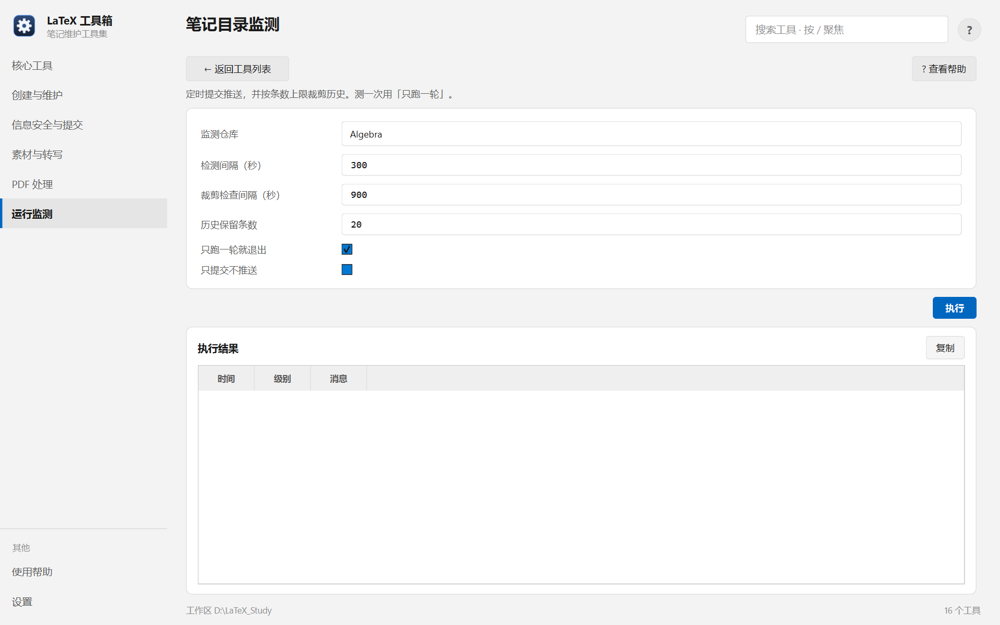

帮助目录 · 运行监测
盯着一个仓库，有改动就自动提交推送，并按条数上限裁剪历史，让提交记录不无限增长。
| 面板入口 | 运行监测 → 卡片「笔记目录监测」→ 选仓库与间隔 → 执行 |
|---|---|
| 命令行 | python tools/watch_notes/watch_notes.py |

「只跑一轮」默认勾着，适合先试一次看行为；长期跑要去掉这个勾。
| 项 | 说明 |
|---|---|
| 监测仓库 | 一次盯一个仓库。 |
| 检测间隔 | 多久看一次改动，最小 10 秒。 |
| 裁剪检查间隔 | 多久检查一次历史条数，最小 10 秒。 |
| 历史保留条数 | 超出就按条数上限一次裁到该值。 |
| 只跑一轮 | 默认开。测行为时用，长期跑要关。 |
| 只提交不推送 | 想先在本地攒着时用。注意这只影响推送，裁剪仍然只在推送成功后做。 |
python tools/watch_notes/watch_notes.py --dir LaTeX_Notes/Algebra --once python tools/watch_notes/watch_notes.py --dir LaTeX_Notes/Algebra --keep 20
| 内容 | 位置 |
|---|---|
| 状态与日志 | 便携：tools/watch_notes/_state 与 _logs；安装：%LOCALAPPDATA%\LaTeX-Toolbox\watch_notes\ |
| 锁文件 | 同一状态目录下的 watch-*.lock |
Q：设了「每 15 分钟删一次」，历史还是越来越长
A：旧版语义是「删最早一条」，而提交速度比删除快，永远追不上。现在改成「按条数上限一次裁到该值」，配 --keep 用。
Q：裁剪后 push 被拒
A：历史被改写了，远程还是旧链。确认本地内容无误后 git push --force-with-lease。
Q：日志里一直写「无改动」
A：正常。它只在检测到改动时才提交。
Q：关掉窗口后还在跑吗？
A：不会。「只跑一轮」之外的模式是前台常驻，窗口关掉进程就结束。
Q：为什么裁剪没发生？
A：只在推送成功后裁剪。设了「只提交不推送」时不会裁。